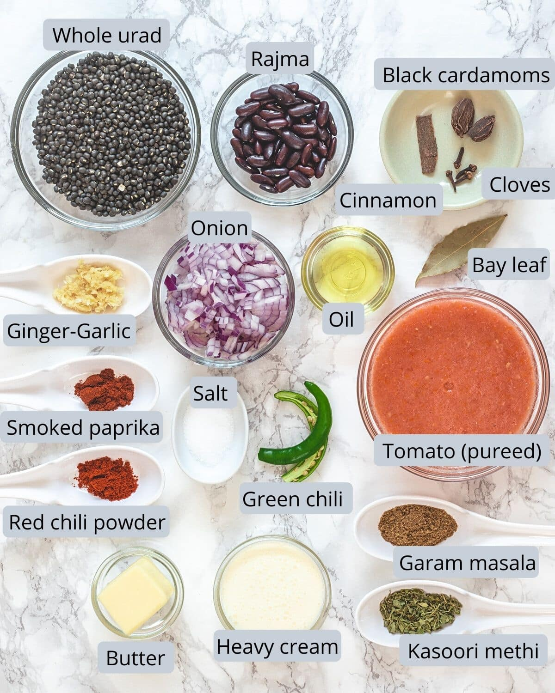

Dal Makhani Recipe

Ingredients
- 1 cup black urad dal (whole black lentils)
- 1/4 cup kidney beans (rajma)
- 4 cups water
- 1 large onion (finely chopped)
- 2 tomatoes (pureed)
- 1 tablespoon ginger-garlic paste
- 1 teaspoon cumin seeds
- 1 teaspoon red chili powder
- 1 teaspoon garam masala
- 1/2 cup cream
- 2 tablespoons butter
- Salt to taste
- Fresh coriander leaves (for garnish)
Instructions
- Soak the black urad dal and kidney beans overnight in water.
- In a pressure cooker, add the soaked dal and beans with 4 cups of water. Cook until soft (about 15-20 minutes).
- In a separate pan, heat butter and add cumin seeds. Once they splutter, add chopped onions and sauté until golden brown.
- Add ginger-garlic paste and cook for a minute until fragrant.
- Add tomato puree, red chili powder, and salt. Cook until the oil separates from the mixture.
- Mix in the cooked dal and beans. Add water if needed to achieve desired consistency.
- Stir in cream and garam masala. Simmer for 10-15 minutes, stirring occasionally.
- Garnish with fresh coriander leaves and serve hot with naan or rice.
Dietary Restrictions
This recipe is vegetarian. For a vegan version, substitute cream with coconut cream and use oil instead of butter.
Back to Recipes